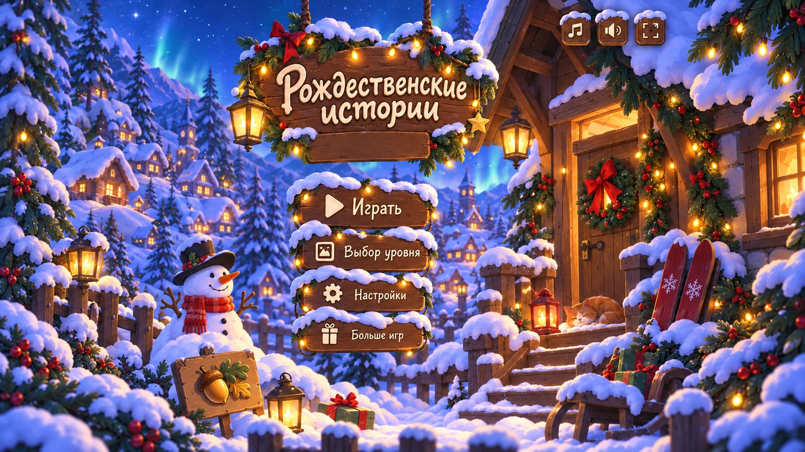

Уютные миры для больших
и маленьких открытий
‹
Ⅱ
⚙
Колёсико — увеличить · перетаскивание — осмотреть
−
100%
+
Загружаем зимнюю историю…
История собрана! ✨
Переиграть
Зайти в хижину и испечь пирог
Следующий уровень →
Закрыть